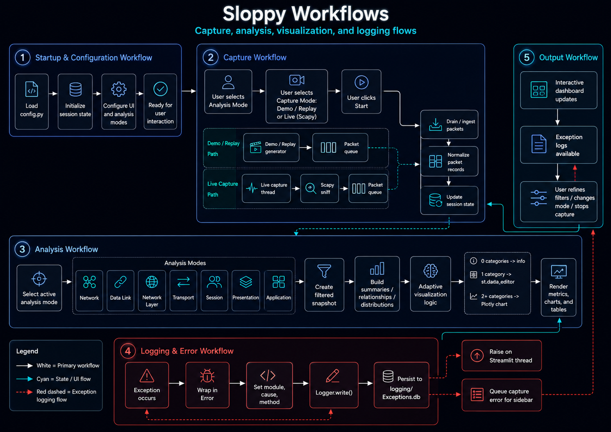

Workflows¶

Startup and Configuration¶
- Import
config.pyvalues. - Configure the Streamlit page.
- Initialize required
st.session_statekeys. - Initialize capture queues, capture state, and packet storage.
- Render the selected analysis mode and its controls.
Packet Capture¶
Demo / Replay¶
- Generate a representative protocol scenario.
- Normalize each generated record.
- Place records in the packet queue.
- Drain the queue into session-state packet storage.
- Enforce the configured packet-window size.
Live Scapy Capture¶
- Validate capture availability and selected interface.
- Start a background capture thread.
- Invoke the packet callback for each captured packet.
- Parse and normalize supported protocol metadata.
- Place normalized records in the packet queue.
- Drain the queue during Streamlit reruns.
- Stop capture when requested or when the capture thread exits.
Filtering¶
- Build a complete DataFrame from session-state packet records.
- Apply global protocol, port, address, and time-window filters.
- Apply mode-specific filters.
- Produce a filtered snapshot without mutating the underlying packet history.
- Pass the snapshot to aggregation and rendering functions.
Analysis and Visualization¶
- Select the active analysis mode.
- Build mode-specific summaries and relationships.
- Apply sparse-data rules.
- Create Plotly figures or read-only data editors.
- Render metrics, visualizations, and packet-level details.
Error Handling¶
Streamlit Thread¶
- Catch the exception.
- Preserve existing
Errorinstances without duplicate logging. - Wrap other exceptions in
Error. - Set module, cause, and method metadata.
- Write the exception through
Logger. - Raise the wrapped exception.
Capture Thread¶
- Catch the exception in the background thread.
- Wrap and log the exception.
- Place a sanitized capture error in the capture-error queue.
- Stop the capture event when continued capture is unsafe.
- Display the queued error in the Streamlit sidebar.